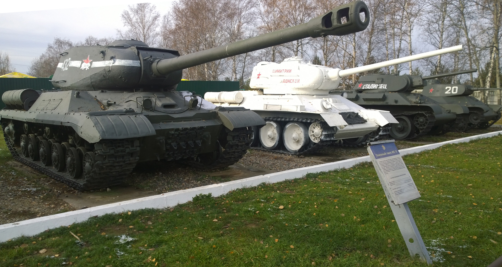

В конце сентября – начале октября 1941 года четыре армии Западного фронта (командующий генерал-лейтенант И.С.Конев) оказались в окружении между Смоленском и Вязьмой. Сложилась тяжелейшая обстановка: сплошной линии фронта не было, оборонительные сражения и бои вели дивизии, полки, отдельные батальоны, которые, неся большие потери, отступали в направлении Москвы.
Сталин отозвал генерала армии Г.К.Жукова с Ленинградского фронта в Москву, приказав выехать на фронт для выяснения сложившейся обстановки. Ставка не знала истинного положения происходящего. Уже через полутора суток Жуков доложил:
- Сплошной линии фронта нет. Сдерживающие, очаговые бои ведутся батальонами, полками и реже дивизиями самостоятельно. Танков и артиллерии мало, нет горючего для танков. Связь нарушена. Личного состава, по приблизительному подсчету, чуть более 90 тысяч. Необходимо срочно направить из резерва Ставки две армии и 200 танков.
Сталин отозвал генерала армии Г.К.Жукова с Ленинградского фронта в Москву, приказав выехать на фронт для выяснения сложившейся обстановки. Ставка не знала истинного положения происходящего. Уже через полутора суток Жуков доложил:
- Сплошной линии фронта нет. Сдерживающие, очаговые бои ведутся батальонами, полками и реже дивизиями самостоятельно. Танков и артиллерии мало, нет горючего для танков. Связь нарушена. Личного состава, по приблизительному подсчету, чуть более 90 тысяч. Необходимо срочно направить из резерва Ставки две армии и 200 танков.
[Сульянов, А.К. Генерал, который был самим собой: док.повесть. – Мн.: Беларусь, 2010. – с.13]
Фронт, осень 1941
Москва оказалась под угрозой, Штаб Западного фронта мог быть взят в окружение. Первое решение Сталина было отдать Конева под трибунал за развал армии. Жуков убедил не делать этого, напомнив, что командного состава не хватает, да и расстрел Павлова не спас положения. Жуков становится командующим Западным фронтом. На него возлагается ответственность за оборону Москвы. Конев – его заместитель. Штаб Западного фронта разместили в Алабино, в военном городке. Там была связь. Военный совет фронта временно перевели в Можайск.
Накануне назначения Жукова, 9 октября 1941 года, Ставка создала фронт Можайской линии обороны во главе с командующим Московским военным округом генерал-лейтенантом П.Артемьевым, членом военного совета, комиссаром К.Телегиным. Они должны были обеспечить оборону города и укрепить Можайскую линию обороны. Превосходящие силы группы армии «Центр» не давали возможности это сделать. Жукову предстояло из разрозненных, но действующих остатков создать заново Западный фронт. Не хватало командного состава.
Накануне назначения Жукова, 9 октября 1941 года, Ставка создала фронт Можайской линии обороны во главе с командующим Московским военным округом генерал-лейтенантом П.Артемьевым, членом военного совета, комиссаром К.Телегиным. Они должны были обеспечить оборону города и укрепить Можайскую линию обороны. Превосходящие силы группы армии «Центр» не давали возможности это сделать. Жукову предстояло из разрозненных, но действующих остатков создать заново Западный фронт. Не хватало командного состава.
Можайская линия обороны
В этой тяжелейшей, опасной обстановке Ставка приняла решение: «Временно прекратить эвакуацию всех военных заведений, слушателей академий немедленно направить на укомплектование воинских частей».
Выполнив марш-бросок к Малоярославцу, рота стала подразделением укрепрайона в составе Резервного фронта маршала С.Буденного.
[Сульянов, А.К. Генерал, который был самим собой: док.повесть. – Мн.: Беларусь, 2010. – с.15]Так слушатель Военной академии бронетанковых войск старший лейтенант Ивановский стал командиром танка Т-34. Рота располагала четырьмя танками Т-34, 2 КВ, несколькими легкими танками БТ-5 и БТ-7.
Выполнив марш-бросок к Малоярославцу, рота стала подразделением укрепрайона в составе Резервного фронта маршала С.Буденного.
Танк КВ-1
Но война быстро вносила свои коррективы. Старший лейтенант Е.Ивановский стал начальником штаба 27-го танкового полка с присвоением звания «капитан».
Вот как об этом вспоминает Евгений Ивановский в своей книге «Атаку начинали танкисты»:
«Не успели мы в общежитии подняться на свой этаж, как нескольких слушателей нашей группы, в том числе и меня, срочно вызвали к начальнику академии. Он объявил о нашем досрочном выпуске.
Известие не то чтобы неожиданное. Досрочно выпускали в эти первые месяцы войны и других. Все-таки проняло до глубины души. Значит, на фронт… Туда, где ты, военный человек, сейчас больше всего нужен.
В отделе кадров уже ждало меня предписание: «Капитана Ивановского Евгения Филипповича назначить начальником штаба 27-го танкового полка…»
Повертел я листок в руках и с досадой говорю работнику отдела кадров:
- Тут ошибка: написано «капитана», в то время как я старший лейтенант.
Кадровик, молчаливый такой педант, каких немало среди них, вместо ответа потребовал у меня удостоверение личности. Развернул книжечку и вписал в нее номер приказа, которым мне присвоено звание капитана, дату, когда это свершилось, - оказывается, вчера. Не совсем точно было указано в предписании и мое назначение, но не кадровики в том виноваты – <…> из-за нехватки боевой техники вместо 27-го танкового полка формировался уже 27-й отдельный танковый батальон. Я узнал об этом лишь по прибытии в часть».
Вот как об этом вспоминает Евгений Ивановский в своей книге «Атаку начинали танкисты»:
«Не успели мы в общежитии подняться на свой этаж, как нескольких слушателей нашей группы, в том числе и меня, срочно вызвали к начальнику академии. Он объявил о нашем досрочном выпуске.
Известие не то чтобы неожиданное. Досрочно выпускали в эти первые месяцы войны и других. Все-таки проняло до глубины души. Значит, на фронт… Туда, где ты, военный человек, сейчас больше всего нужен.
В отделе кадров уже ждало меня предписание: «Капитана Ивановского Евгения Филипповича назначить начальником штаба 27-го танкового полка…»
Повертел я листок в руках и с досадой говорю работнику отдела кадров:
- Тут ошибка: написано «капитана», в то время как я старший лейтенант.
Кадровик, молчаливый такой педант, каких немало среди них, вместо ответа потребовал у меня удостоверение личности. Развернул книжечку и вписал в нее номер приказа, которым мне присвоено звание капитана, дату, когда это свершилось, - оказывается, вчера. Не совсем точно было указано в предписании и мое назначение, но не кадровики в том виноваты – <…> из-за нехватки боевой техники вместо 27-го танкового полка формировался уже 27-й отдельный танковый батальон. Я узнал об этом лишь по прибытии в часть».
[Ивановский, Е.Ф. Атаку начинали танкисты: 8-й гвард.танк.корпус (Военные мемуары). – М.: Воениздат, 1984. – с.27-28]
Встреча много лет спустя после войны. Е. Ф. Ивановский и бывший механик-водитель его командирского танка Г. Желнин
Ивановский очутился в море проблем: надо было принимать прибывающий личный состав, организовывать выдачу личного оружия. Командир батальона майор В.Шипицын во всем доверял Ивановскому – увлеченному, трудолюбивому, требовательному начальнику штаба.
После разгрузки техники своим ходом двинулись до ст.Кубинка без единого отказа боевой техники.
Гитлеровцы, имея численное преимущество, продолжали наступление. Налеты вражеских бомбардировщиков, артудары становились все чаще и продолжительнее, и поэтому личный состав отрыл земельные укрытия, что спасло бойцов и командиров от больших потерь. Опыт командира П.Юрченко, Героя Советского Союза, отличившегося при прорыве «линии Маннергейма», и Е.Ивановского в боях на Карельском перешейке зимой 1940 года помог танкистам.
После разгрузки техники своим ходом двинулись до ст.Кубинка без единого отказа боевой техники.
Гитлеровцы, имея численное преимущество, продолжали наступление. Налеты вражеских бомбардировщиков, артудары становились все чаще и продолжительнее, и поэтому личный состав отрыл земельные укрытия, что спасло бойцов и командиров от больших потерь. Опыт командира П.Юрченко, Героя Советского Союза, отличившегося при прорыве «линии Маннергейма», и Е.Ивановского в боях на Карельском перешейке зимой 1940 года помог танкистам.

Танковый музей в Кубинке
Танковый музей в Кубинке
В октябре 1941-го вышел приказ командующего Западным фронтом генерала армии Жукова: «Ни шагу назад». В тот же вечер начальник штаба Ивановский изложил экипажам танков требования приказа. Все хорошо понимали степень ответственности в сложившейся обстановке. Положение на фронте было тяжелейшим: ни днем, ни ночью бои не прекращались. Во время одной из бомбежек погиб командир батальона майор В.Шипицын.
Ивановский вместе с первым замкомбатом М.Купернюком старались заменить погибшего командира. Это было нелегко: сверху ставили задачу за задачей.
Одно из заданий дивизии обязывало все батальоны во время прорыва немцев под Дорохово ликвидировать прорвавшуюся вражескую группировку. На плечи Ивановского лег груз задач: нужно было «выбить» новые орудия, танки. Но самое главное, он, вчерашний старший лейтенант, на вид юноша, не побоялся отстоять свою точку зрения и убедить командира дивизии, седовласого полковника, изменить тактику боя. Ивановский предложил действовать танкистам под прикрытием артиллерии. Нужно было действовать из засады и избегать при численном преимуществе врага прямого, лобового столкновения. Танков было мало, их надо было беречь.
Несколько раз действия из засад оказались столь успешными, что командование дивизии признало подобную тактику в условиях острой нехватки танков наиболее эффективной.
Ивановский вместе с первым замкомбатом М.Купернюком старались заменить погибшего командира. Это было нелегко: сверху ставили задачу за задачей.
Одно из заданий дивизии обязывало все батальоны во время прорыва немцев под Дорохово ликвидировать прорвавшуюся вражескую группировку. На плечи Ивановского лег груз задач: нужно было «выбить» новые орудия, танки. Но самое главное, он, вчерашний старший лейтенант, на вид юноша, не побоялся отстоять свою точку зрения и убедить командира дивизии, седовласого полковника, изменить тактику боя. Ивановский предложил действовать танкистам под прикрытием артиллерии. Нужно было действовать из засады и избегать при численном преимуществе врага прямого, лобового столкновения. Танков было мало, их надо было беречь.
Несколько раз действия из засад оказались столь успешными, что командование дивизии признало подобную тактику в условиях острой нехватки танков наиболее эффективной.
Жуков Г.К.
Однажды в штаб батальона поступила команда организовать засаду на Можайском шоссе: под угрозой захвата врагом оказалось Алабино, где разместился штаб Западного фронта. Бой был жестоким. Он начался на рассвете и закончился, когда на землю опустились сумерки. Задача, поставленная штабом батальона, была выполнена сполна.
Из воспоминаний Ивановского:
«Ночью танки выдвинулись к месту засады. Боевые машины были окопаны и замаскированы в каких-нибудь двухстах метрах от Минской автострады. Артиллеристы устроили НП на ветвях высокой сосны, заняли удобные, скрытые позиции автоматчики.
Затишья на нашем участке не было ни минуты. Противник вел орудийный и минометный обстрел по площадям. <…> Бомбили и обстреливали долго. Потом как-то внезапно наступила тишина.
<…> Двадцать, тридцать, сорок минут тягучей, изнурительной тишины. А потом послышался мощный гул. Большая вражеская колонна, готовая ежеминутно развернуться в боевой порядок, двигалась по автостраде – около 30 танков, десяток грузовиков с автоматчиками. <…> Прогремели выстрелы танкистов и артиллеристов. Почти одновременно запылали передний и замыкающий танки. Артиллеристы били по другим машинам колонны, автоматчики расстреливали спешившихся и бросившихся врассыпную гитлеровцев.
<…> Ни одна вражеская машина не прошла по Минской автостраде. <…> Налицо был явный успех. Батальон выдержал испытание. Главный же результат этого скоротечного боя выражался, пожалуй, не столько числом подбитых и уничтоженных вражеских танков, сколько моральным подъемом, который охватил личный состав батальона».
Из воспоминаний Ивановского:
«Ночью танки выдвинулись к месту засады. Боевые машины были окопаны и замаскированы в каких-нибудь двухстах метрах от Минской автострады. Артиллеристы устроили НП на ветвях высокой сосны, заняли удобные, скрытые позиции автоматчики.
Затишья на нашем участке не было ни минуты. Противник вел орудийный и минометный обстрел по площадям. <…> Бомбили и обстреливали долго. Потом как-то внезапно наступила тишина.
<…> Двадцать, тридцать, сорок минут тягучей, изнурительной тишины. А потом послышался мощный гул. Большая вражеская колонна, готовая ежеминутно развернуться в боевой порядок, двигалась по автостраде – около 30 танков, десяток грузовиков с автоматчиками. <…> Прогремели выстрелы танкистов и артиллеристов. Почти одновременно запылали передний и замыкающий танки. Артиллеристы били по другим машинам колонны, автоматчики расстреливали спешившихся и бросившихся врассыпную гитлеровцев.
<…> Ни одна вражеская машина не прошла по Минской автостраде. <…> Налицо был явный успех. Батальон выдержал испытание. Главный же результат этого скоротечного боя выражался, пожалуй, не столько числом подбитых и уничтоженных вражеских танков, сколько моральным подъемом, который охватил личный состав батальона».
[Ивановский, Е.Ф. Атаку начинали танкисты: 8-й гвард.танк.корпус (Военные мемуары). – М.: Воениздат, 1984. – с.28-30]
Конкурс "Танковый биатлон" Армейских международных игр 2016 на подмосковном полигоне Алабино
О том, что немецкая механизированная группа пыталась прорваться в Алабино с целью разгрома Ставки Западного фронта, Ивановский узнал спустя 40 лет, когда был представлен к званию Героя Советского Союза.
В конце октября - начале ноября обстановка на Западном фронте достигла апогея. Не хватало орудий, боеприпасов, горючего, телефонных аппаратов, зимнего обмундирования, продуктов питания. Можно представить сложившуюся обстановку, если танки на фронт выделялись поштучно! Именно в те дни вошли в историю священные слова политрука Клочкова: «Велика Россия, а отступать некуда – позади Москва». Удержать оборону Москвы во многом смогли мудрые решения командного состава. И среди них был Е.Ф.Ивановский. Несмотря на высокие занимаемые должности, видное положение, уважение, звание Героя Советского Союза Е.Ф.Ивановский получил только спустя 40 лет после окончания войны. Звание Героя Советского Союза присвоено ему 21.02.1985 года.
В конце октября - начале ноября обстановка на Западном фронте достигла апогея. Не хватало орудий, боеприпасов, горючего, телефонных аппаратов, зимнего обмундирования, продуктов питания. Можно представить сложившуюся обстановку, если танки на фронт выделялись поштучно! Именно в те дни вошли в историю священные слова политрука Клочкова: «Велика Россия, а отступать некуда – позади Москва». Удержать оборону Москвы во многом смогли мудрые решения командного состава. И среди них был Е.Ф.Ивановский. Несмотря на высокие занимаемые должности, видное положение, уважение, звание Героя Советского Союза Е.Ф.Ивановский получил только спустя 40 лет после окончания войны. Звание Героя Советского Союза присвоено ему 21.02.1985 года.
Медаль "Золотая звезда" №11524